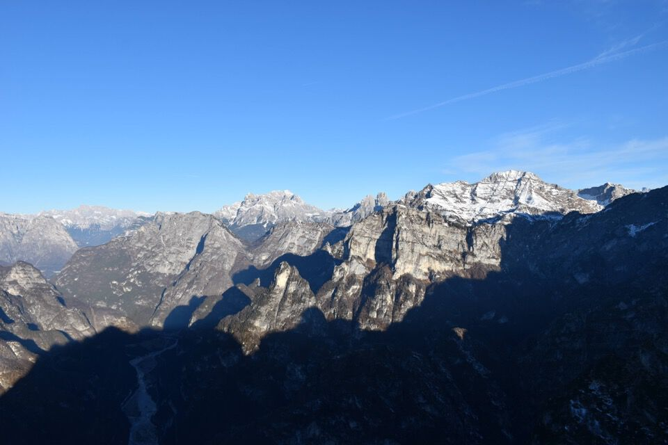
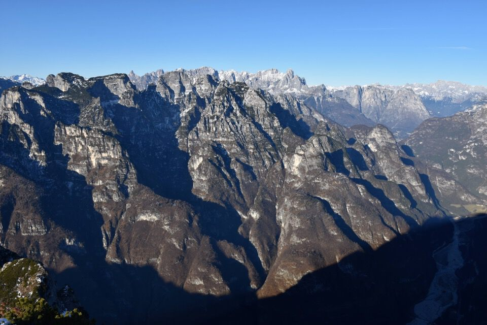
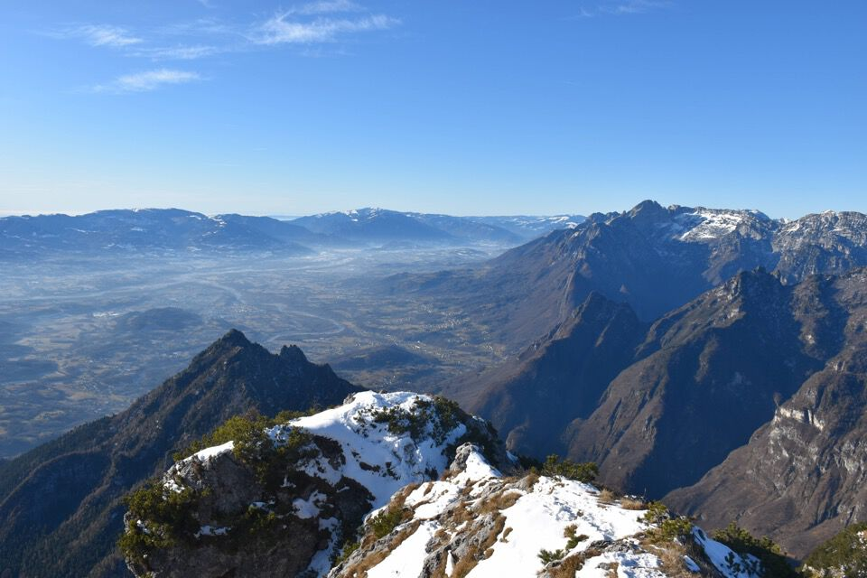

Oggi in trasferta: prima volta, per tutti, nel gruppo della Schiara.
Partiamo dal Pian de la Fraina in val Gresal e in quattro e quattr'otto siamo a forcella S. Giorgio: la Pala Alta da qui appare bellissima, con queste sue rampe erbose.
Per la prima volta in vita mia vedo i Monti del Sole, infuocati dall'alba (mugo-enrosadira?), che emozione!
Qui in foto La Palàza, il Mont Alt e la Cima delle Coràie.
Il Piz de Vedana con dietro il gruppo del Pizzòc.
Saliamo per la via "diretta", molto bella.
Sbuchiamo su una forcella a ridosso della cima: che spettacolo, a picco sul Cordévole! Peccato che le ombre così invadenti non permettano di scattare belle foto.
Verso i Monti del Sole.
Baratri vertiginosi: la val Laresé, delimitata a sx dalla Costa Soracase, confluisce nella val de Piero. L'antro con parete gialla che si vede in foto afferisce al Colòn de Costa Bramosa (dopo anni che vedo i post del Bee qualcosa ho imparato!).
Zélo: ce biel.
Spirlonga: magnifica.

Coro: strepitoso.
Scopriamo di essere fuori via, quindi ci tocca baruffare con qualche mugo, mandiamo avanti le fanciulle...
Dalla cima verso Moiazza e Civetta.
Le Stornade nei MdS (quella in centro col van mugoso).
Finalmente vedo anche io la parete Sud del Burèl, con lì accanto la Schiara.
Una frazione di Agordo sormontata dalle Pale di San Lucano: che monti strani!
La Pala Bassa: ce la faremo?
Foto ricordo.

E via giù, ora per l'altro sentiero.
Ammutinamento: io Jenny e Greta abbandoniamo il sentiero e iniziamo a traversare i Grass della Pala Alta. Bel percorso, non difficile ma selvatico e per avvezzi.
I pendii da cui siamo scesi.
Fantastico il Burèl oltre forcella Medòn.
Chiaramente non stiamo improvvisando, non è pensabile: avevamo ben studiato il percorso i giorni prima visionando foto e relazioni.
Comunque, com'è chiaro quando ci si muove in ambienti nuovi, un errore l'abbiamo fatto: andando in cerca della ripida pala che permette di scendere al Lastregàl, invece di scendere ci siamo alzati; dalla foto, che mostra la Pala Bassa con l'ominima forcella a sx, sembrerebbe che avessimo la cengia in ombra sotto i piedi, e invece fra noi e la cengia c'era una salto di roccia di un centinaio di metri!
L'errore: ci siamo alzati lungo questa cresta, aspettandoci di trovare una pala d'erba che permette di scendere a dx... eh no!
Torniamo giù e troviamo la rampa, ripida e delicata con questa neve.
Scendiamo, guidati dalle orme di un camoscio, sempre sorvegliati dal Tirón de Monpiana e dal Zimón de Terne.
La provvidenziale cengetta d'accesso alla rampa: la pala termina con un enorme salto!
Ecco la pala nella sua interezza.

Scendiamo giù per la val Medòn: bellissimo l'Olt de Mèdon.
Grazie ad Andrea ed Elena per la pazienza!